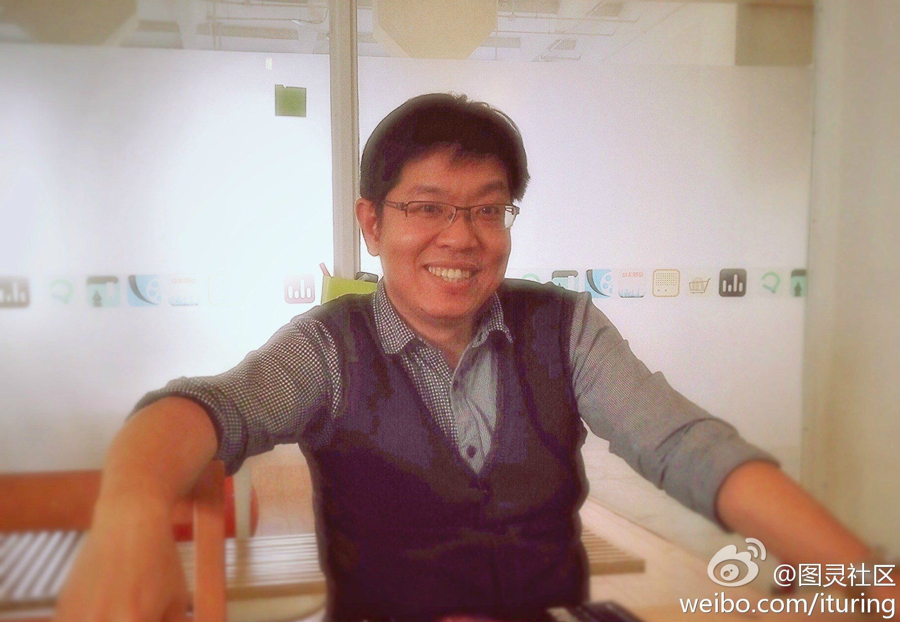
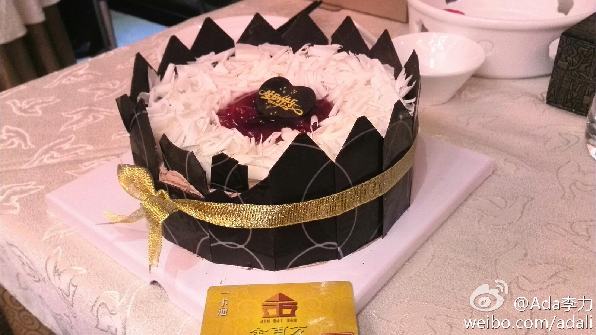

//@刘松--甲骨文:建议有空先去看看圣菲研究所的相关书籍，不确定时代，链接，自组织这些概念在90年代美国已经讨论过了，此文算做了个科普，但远不够透彻

Ada李力
2014-03-26


Ada李力
2014-03-26
打几只苍蝇而已//@caoz:是的，这里面水太深！
@tombkeeper:
《新京报》：“北京收钱删帖利益链曝光 一名网警受贿百万落网”， 网页链接。不受监督的权力一定会被用来换钱，这是必然的，想都不用想。这种一笔一笔收小钱的也只是苍蝇，真正的老虎是把劫持的流量拿来搞私服，弄的钱能顶一个上市公司。
网页链接。不受监督的权力一定会被用来换钱，这是必然的，想都不用想。这种一笔一笔收小钱的也只是苍蝇，真正的老虎是把劫持的流量拿来搞私服，弄的钱能顶一个上市公司。
Ada李力
2014-03-26
转发微博
@图灵社区:
#图灵访谈#豆瓣工程副总裁@段念_Dennis ，他在华为的时候抛弃了大家羡慕的市场部岗位，只为了“搞技术”。他在谷歌的时候放弃了充满幸福感的工作，只为了见识一下真正的风浪。如今他来到了豆瓣，做起了大牛们不屑的技术管理，只因为他在这里找到了实实在在“可以做的事”……网页链接
- 
Ada李力
2014-03-26
办过金百万的会员卡后很久没去过。他们前两天打电话说会员生日送生日蛋糕，没当回事儿，小伙儿锲而不舍地打过好几个电话，有个电话还被我以为是骚扰电话直接挂了。今天去那里吃饭，送了蛋糕，长寿面，果盘。不错。
- 